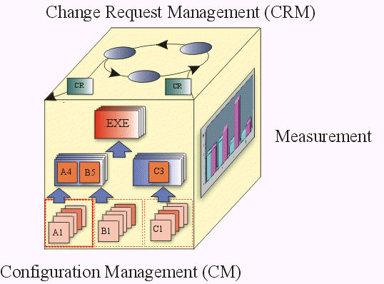

Concepts:
Configuration and Change Request Management
The major aspects of a CM System include all of the following:
The following CM Cube, suggesting their mutual interdependence, serves to
iconograph the major aspects of a CM System.

- Change Request Management (CRM) – addresses the organizational
infrastructure required to assess the cost, and schedule, impact of a
requested change to the existing product. Change Request Management
addresses the workings of a Change Review Team or Change Control Board.
- Configuration Status Accounting
(Measurement) – is
used to describe the ‘state’ of the product based on the type, number,
rate and severity of defects found, and fixed, during the course of product
development. Metrics derived under this aspect, either through audits or raw
data, are useful in determining the overall completeness status of the
project.
- Configuration
Management (CM) –
describes the product structure and identifies its
constituent configuration items that are treated as single versionable
entities in the configuration management process. CM deals with defining
configurations, building and labeling, and collecting versioned artifacts into
constituent sets and maintaining traceability between these versions.
- Change Tracking – describes what is done to components
for what reason and at what time. It serves as history and rationale of
changes. It is quite separate from assessing the impact of proposed changes
as described under 'Change Request Management'.
- Version Selection – the purpose of good 'version
selection' is to ensure that right versions of configuration items are
selected for change or implementation. Version selection relies on a solid
foundation of 'configuration identification'.
- Software Manufacture – covers the need to automate the
steps to compile, test and package software for distribution.
The Rational Unified Process describes a comprehensive CM System that covers
all CM aspects. The purpose is to allow for an effective CM process that:
- is built into the software development process
- helps manage the evolution of the software development work products
- allows developers to execute CM tasks with minimal intrusion into the
development process
One goal of the Rational CM process is to encourage version control of
artifacts captured in development tools, and to de-emphasize the resource
inefficient production of hardcopy documentation per-se.
Another goal of the Rational CM process is to ensure that the level of
control applied to each artifact is based on the maturity level of that product.
As work products mature, change authorization migrates from implementer, to
subsystem or system integrator, to project manager and ultimately to the
customer.
For the sake of process efficiency it is important to ensure that the
bureaucratic overhead associated with the Change Request Management process is
consistent with the maturity of the product.
For example, during early iterations the Change Request Management (CRM)
process may be relatively informal. In the later phases of the development
lifecycle, the CRM process can be made more strict to ensure that necessary test
and documentation resources can handle changes as well as assessing the
potential instability that a change may introduce. A project which is unable to
tailor the level of control during the development process will not be running
as efficiently as possible.
Copyright
© 1987 - 2001 Rational Software Corporation
| |

|
 Disciplines >
Disciplines >
 Configuration & Change Management >
Configuration & Change Management >
 Concepts >
Concepts >